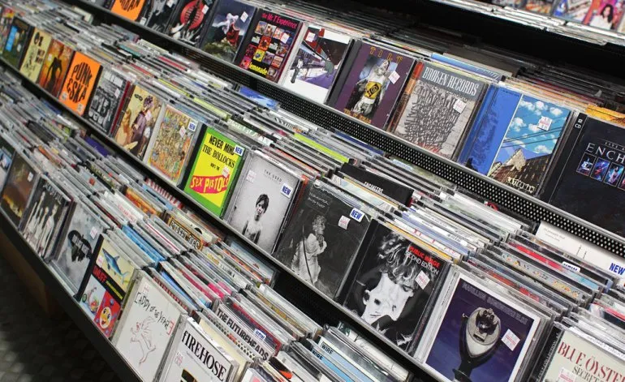

The Cave Disqueria surge del amor por la musica, donde la gente puede venir y comprar los disco de sus bandas favoritas. Con discos desde los años 70 hasta la actualidad, desde Metallica o Led Zeppelin hasta lo mas nuevo del trap. La musica transmite felicidad, amor, paz, nada mas nos alegra que compartirla al mundo.